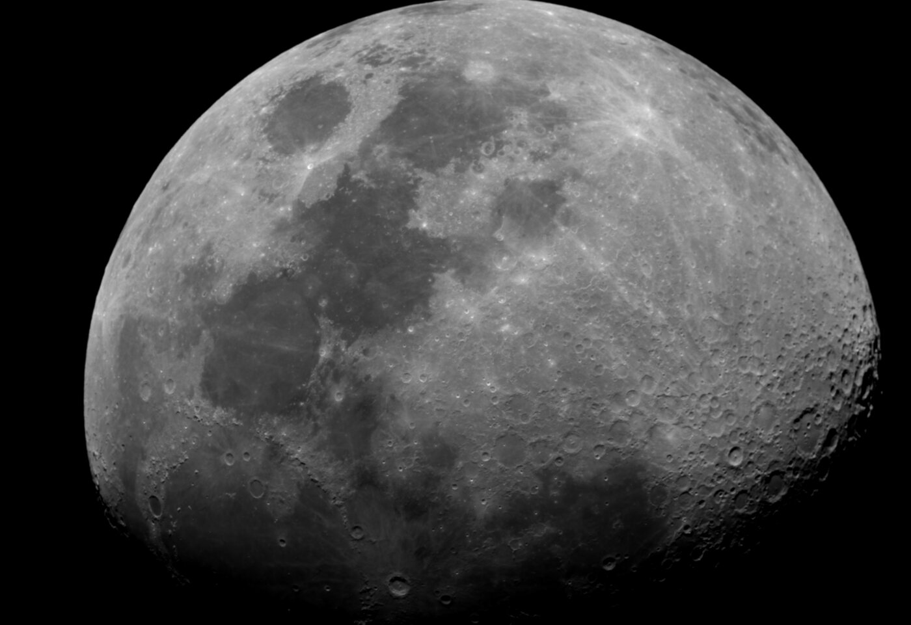

Research interests involving solar physics, astronomy observations, computational physics, and scientific image analysis.
Conducted solar observations using white-light telescope imaging. Developed workflows for tracking sunspots, measuring spot areas, and studying solar rotation behavior.
Worked with observational data from the CUTE CubeSat mission to estimate stellar rotation properties using computational analysis.
